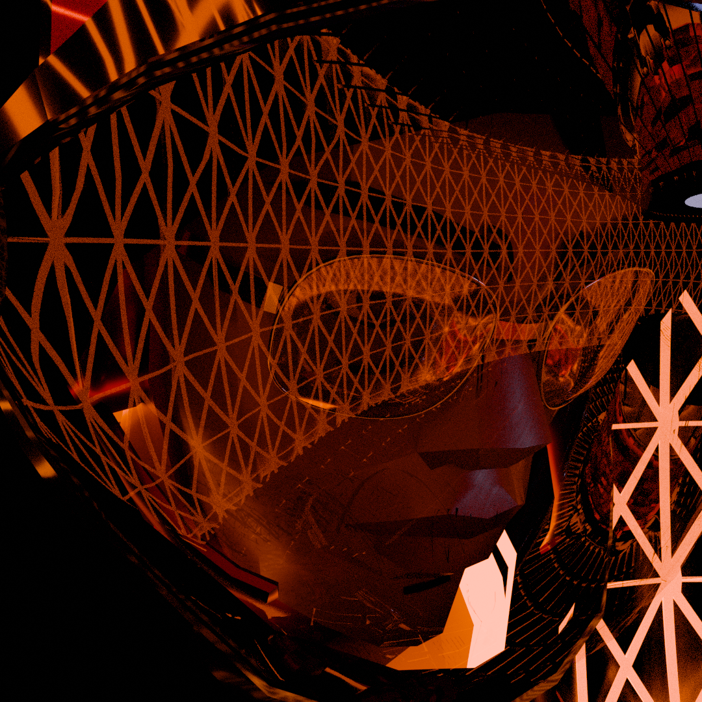
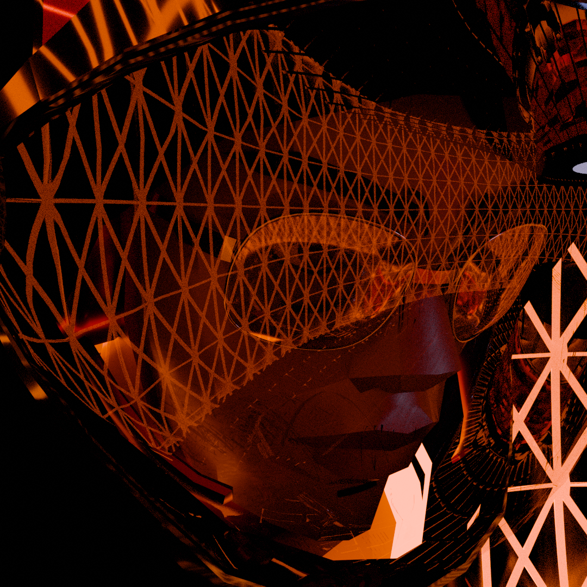

Hey email me: jwiigg@proton.me
Find me @jwiigg on bluesky & instagram.

A crew of astronauts carrying the venture through pounds of sulfur, paranoia, and fatigue.
![Mwar Jemison in the vitrification chamber [close up]](HALCY_rest.png)
THE HALCYON, a jovian landing module, rests in the valley of an abyssal hill.
Within: a pilot suspended in a cold, soupy mix agitated every so often by the sudden movement of regolith.
The surrounding structures are thin panes of glass weaved together,
area lights that are only visible when they shatter,
freestanding mirrors.
Something roughly analogous to work and exploration occurs here:
A superheated plasmatic being emerges from the regolith, makes their way inside
through the sweaty brass paneling, wires dripping in their wake,
melting the reflective partitions of the cabin,
searing fat away from all the vital mechanisms of the ship,
An ulcer forming, contents escaping
carburizing the resolve of the crew
Or eating it away.
The sound of ionized particles.
Rolling drums in the distancee
Layers of clouds shearing against the endeavor.
A withering crust of plasma grows cold and brittle //
A burning white ball lacquered over by molten silica.
Low tide exposes the crinkled body of a reentry vehicle.
The passenger still waiting to surface.
![Mwar Jemison in the vitrification chamber [FAR]](HALCY_rest2.png) 

The IEVA SUIT: a mass of equipment with wires laced throughout.
All of the vital devices are positioned at the front of the body instead of in a backpack.
Mobility is most important in a place where pounds of sulfer fall from the sky.
Thank you for reading!